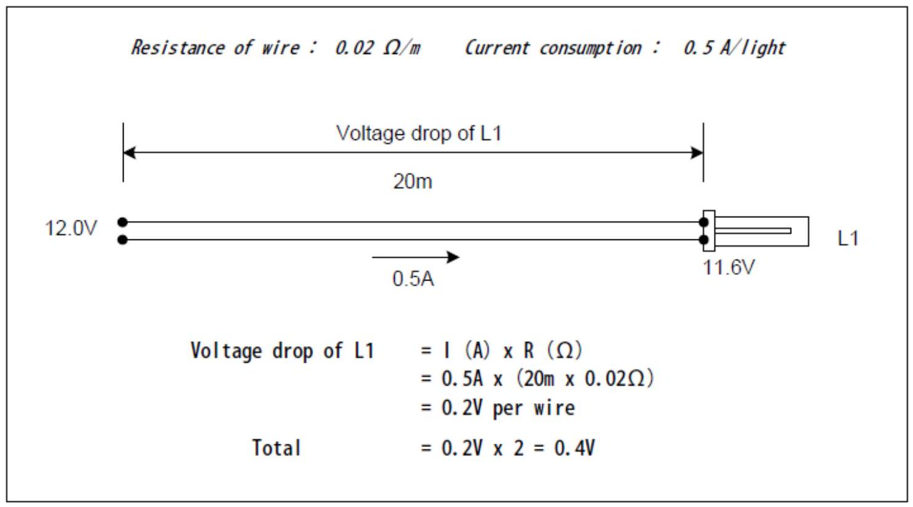

Electrical Calculations (Fuses, Voltage Drop, Wire Size)
SIZING FUSES AND CIRCUIT BREAKERS
List the circuits that need to be protected
Divide the power by system voltage to get current in amps. This is the maximum rated current in the circuit
Increase this figure by 20 per cent of its value (i.e. multiply this figure by 1.2). This is the size of the fuse required.
EXAMPLE
A 12 V system circuit includes a 60 W television and three 10 W lamps:
Divide the power by the system voltage $(12 \mathrm{~V})$ :
This is the maximum current coming from the battery to the charge controller. Increase this figure by 20 per cent:
In the above circuit example, a 9-amp fuse should be used. Since this size does not exist, select the next largest size, in this case a 10 -amp fuse. The current rating of the cable needs to be greater than 10 amps.
WIRE SIZE, VOLTAGE DROP
Voltage drop is the loss of voltage (and hence power) due to resistance in long cable runs. If the wire's cross-section area is too small for a given current, an unacceptable voltage drop will occur over its length. Resistance in the cable converts electrical energy to heat and causes a consequent voltage drop. When the voltage drop is too large in, for example, the cables from the PV module or array, the battery or battery bank will not be charged properly; in distribution circuits it will affect performance of lamps and appliances, and may damage them. The voltage drop also wastes expensive energy from the PV array and battery.
Voltage drop occurs in all wire runs. However, voltage drops of more than 5 per cent are always unacceptable. Correctly selected cable sizes will avoid unacceptable voltage drops.
To calculate voltage drop, one must first know three values:
- the current flow through the wire in amps (I);
- the distance of the cable run in meters (the length of both the positive and negative runs must be included in this calculation!); and
- the resistance factor, K , of the intended cable in ohms per meter.
EXAMPLE 1
EXAMPLE 2
EXAMPLE 3
Suppose electricity is provided for a 24 W lamp in a kitchen 50 m ( 165 feet) from the power source using 2.5 mm 2 cable. Using Ohm's Law, it is possible to calculate the voltage drop for a 12 V DC and 24 V DC system.
For a 12 -volt system the current is 2 amps and for a 24 -volt system it is 1 amp .
- The resistance factor of the 2.5 mm 2 cable, from Table 7.1 a , is $0.0074 \Omega /$ meter.
- The total resistance of the wire is calculated by multiplying the resistance factor by the length of the wire. Note that the number is equal for both the 12 and 24 V DC system because the wire is the same in each case. Use 100 m (i.e. $2 \times 50 \mathrm{~m}$ ) for the calculation because it is a two-way run. The total resistance over the wire run is $0.74 \Omega (0.0074 \Omega$ per meter $\times 100 \mathrm{~m}$ ).
- Next, as per Ohm's Law, the total resistance is multiplied by the current carried in the wire. This gives the voltage drop.
| Cable Size | Resistance in ohms per metre ($\Omega / \mathrm{m}$) |
|---|---|
| 2.5 $\mathrm{mm}^{2}$ | 0.0074 |
| 4.0 $\mathrm{mm}^{2}$ | 0.0046 |
| 6.0 $\mathrm{mm}^{2}$ | 0.0031 |
| 10.0 $\mathrm{mm}^{2}$ | 0.0018 |
| 16.0 $\mathrm{mm}^{2}$ | 0.0012 |
| 25.0 $\mathrm{mm}^{2}$ | 0.00073 |
| 35.0 $\mathrm{mm}^{2}$ | 0.00049 |
| \multirow{2}{*}{Wire Size ($\mathrm{mm}^{2}$)} | Load current | ||||||||
|---|---|---|---|---|---|---|---|---|---|
| 1A | 2A | 3A | 4A | 5A | 6A | 8A | 10A | 14A | |
| 1.5 | 44 | 22 | 15 | 11 | 9 | 7 | 6 | 4 | 3 |
| 2.5 | 75 | 38 | 25 | 19 | 15 | 13 | 9 | 8 | 5 |
| 4.0 | 120 | 60 | 40 | 30 | 24 | 20 | 15 | 12 | 9 |
| 6.0 | 176 | 88 | 59 | 44 | 35 | 29 | 22 | 18 | 13 |
| 10.0 | 300 | 150 | 100 | 75 | 60 | 50 | 38 | 30 | 21 |
SOLUTION
| Voltage Drop in a $2.5 \mathrm{~mm}^{2}$ cable | 12 V DC lamp | 24 V DC lamp |
|---|---|---|
| Current (amps) | 2.0A | 1.0A |
| Length of Wire (m) | 100 m | 100 m |
| Resistance Factor, K ($2.5 \mathrm{~mm}^{2}$ cable) | $0.0074 \Omega / \mathrm{m}$ | $0.0074 \Omega / \mathrm{m}$ |
| Total Resistance ($\mathrm{K} \times 100 \mathrm{~m}$) | $0.74 \Omega$ | $0.74 \Omega$ |
| Voltage Drop (Total resistance $\times$ amps) | 1.48 V | 0.74 V |
| Voltage at Lamp | 10.52 V | 23.26 V |
| Per cent Voltage Drop | 12.3% | 3.1% |
For the 12 V lamp, the voltage drop is 12.3 per cent. This drop is too high and a larger diameter wire size needs to be used. With a 24 V lamp, the voltage drop is only 3.1 per cent. This example demonstrates why 50 m ( 165 foot) cable runs in small solar electric systems are problematic.
WIRE SIZE AND DISTANCE
To avoid voltage, drop larger than $5 \%$ the following sizes of wire and distance to components should be used. The distance shown is the maximum distance allowed between components for each wire.
| \multicolumn{1}{|c|}{ Items } | \multicolumn{5}{|c|}{ Maximum distance (one way) } | (*1) | |||||
|---|---|---|---|---|---|---|---|
| Size of Load | 9 W light | TV | |||||
| Size of wire ($\mathrm{mm}^{2}$) | 2.5 | 4.0 | 6.0 | 2.5 | 4.0 | 6.0 | |
| C/C to Load (m) | 40 | 65 | 95 | 28 | 45 | 67 | |
| Items | Maximum distance (one way) | |||||||
|---|---|---|---|---|---|---|---|---|
| Size of PV | 25 W | 55 W | 83 W | 110W | ||||
| Size of wire ($\mathrm{mm}^{2}$) | 4.0 | 6.0 | 4.0 | 6.0 | 4.0 | 6.0 | 4.0 | 6.0 |
| C/C to Battery (m) | 3.0 | 4.4 | 1.5 | 2.2 | 1.0 | 1.4 | N/A | 1.1 |
| C/C to PV module (m) | 15 | 22 | 8 | 11 | 5 | 7 | 4 | 6 |